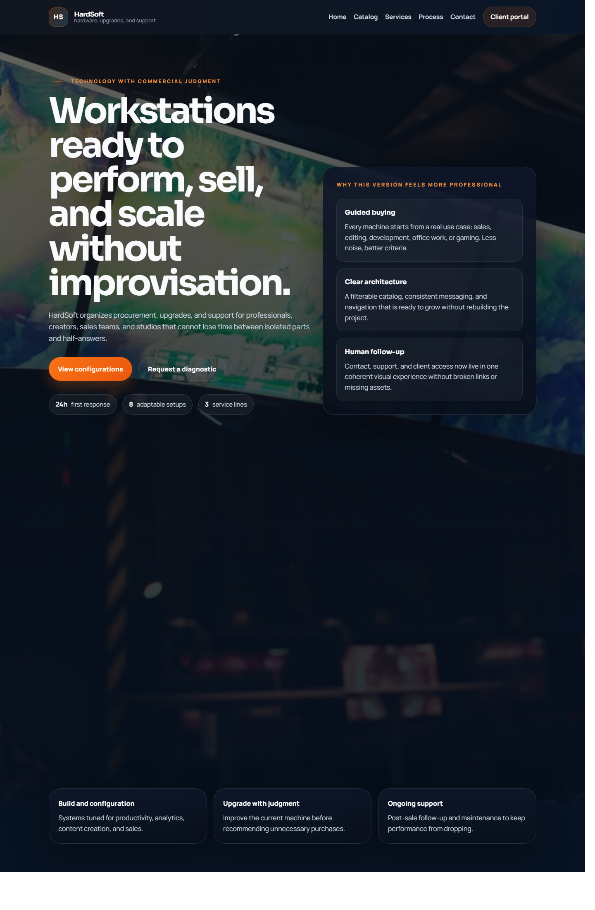
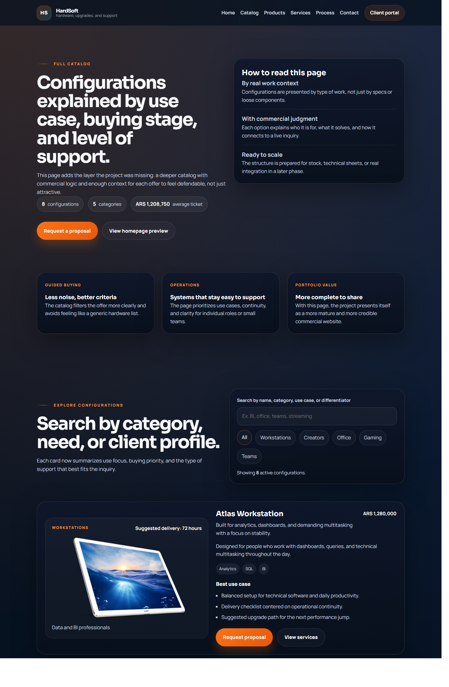
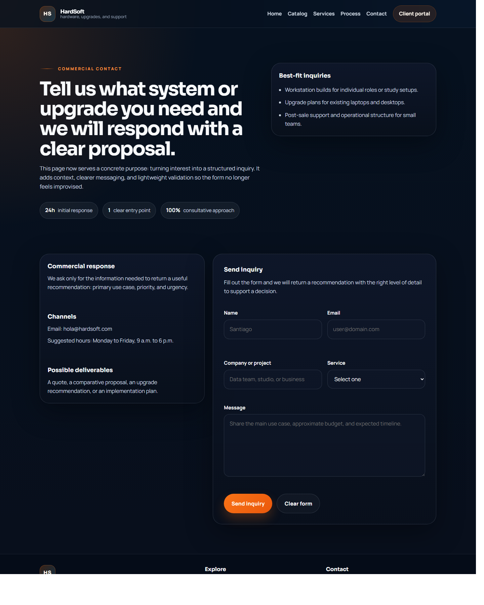
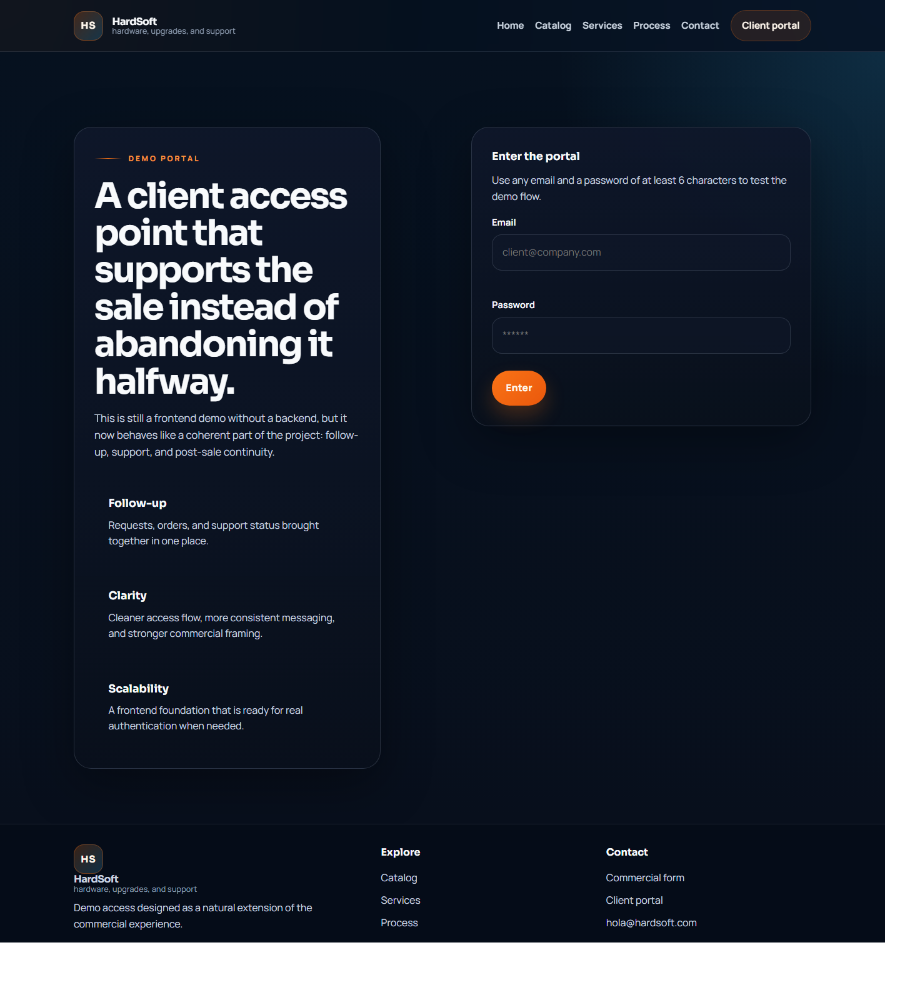

4
Customer-facing screens documented in the final case study
This repository started as a course-style static site. It now works as a more credible commercial frontend demo by adding English-first copy, clearer product logic, a structured inquiry flow, and a lightweight client portal that supports the sales narrative.
The redesign tests a practical product question: can a simple static storefront feel significantly more professional once the information architecture, commercial copy, and interaction flow are tightened?
The homepage now frames the business around guided buying, upgrades, and operational support. The catalog adds context, not just inventory.


The contact page and portal are still frontend-only, but they now extend the product logic instead of feeling disconnected from it.


The strongest outcome is not technical complexity. It is perceived seriousness. By translating the full frontend into English and giving each screen a commercial role, the repository now behaves like a credible product demo rather than a class exercise.